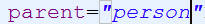

学习了xml下对象创建的三种方式，以及注解创建对象的方式。
现在，看看关于继承类在xml以及注解的方式下的创建过程。


 这个是父类（student类作为其引用类型的成员属性）
这个是父类（student类作为其引用类型的成员属性）

XML方式下，创建继承类的对象：
student 继承了Person ，要在配置文件中，对于子类的 bean ，拥有父类的属性，应该增加一个属性： 
代码演示如下：
父类代码：
public class Person {
private String name;
public String getName() {
return name ;
}
public void setName(String name) {
this.name = name;
}
public void outName(){
System. out.println(this .name );
}
}
子类代码：
public class Student extends Person{
public void say(){
this.outName();
}
}
这样，就可以直接通过容器获得子类对象，并且，继承父类的方法。
效果如下：
小提示：
方法二：
因为是继承，就会有父类的属性，因此，直接在子类中，注入就可以了：不用在容器中，声明父类的bean了。
通过注解完成继承：注意，注解只能应用到引用类型的变量
注解中，不需要加什么属性，直接继承就可以。
这个是父类（student类作为其引用类型的成员属性）接下来是子类：
上述例子表明，注解中，不需要加什么属性，直接继承就可以。